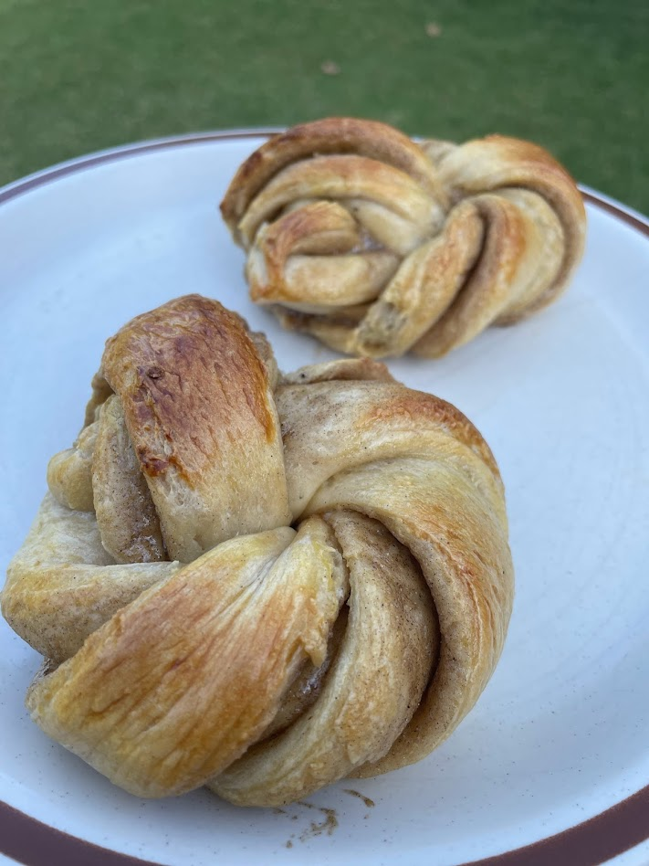

Cardamom buns
Source: based on https://www.carolinescooking.com/swedish-cardamom-buns/
Serving size: Makes around 15 buns
My second attempt at making these
Ingredients
Dough
- 1 cup milk
- 2 tsp (1 packet) yeast
- 1/4 cup butter
- 1/4 cup brown sugar
- 1 tsp ground cardamom
- 3 cups flour
Filling
- 2 tbsp butter
- 6 tbsp brown sugar
- 2 tsp ground cardamom
Brush
- 1 egg
- 1 tsp sugar
- 1 tsp vanilla extract
Instructions
Scald milk, then let it cool to around 100 Fahrenheit or 40 Celsius. Dissolve yeast, then mix in the remainder of the ingredients for the dough, with the flour going in last. Stir and then knead until smooth, and let that rise until it doubles in size. For the filling, mix everything together, but don't melt the butter because then it'll separate out and make a mess. Roll the dough into a roughly 1 foot by 2 foot rectangle, then spread the filling on one half so that you can fold the dough over "hot dog style" and then cut that into strips parallel to the width. Twist each strip until it writhes into a loop, and fold the ugly parts underneath. Set those down on parchment paper, and let it rise again. Mix the egg brush (which doesn't require a full egg yolk, or any of the white) and brush that over the tops of the buns. Preheat the oven to 425 Fahrenheit and bake for around 10 minutes.
Serving suggestion
Eat them while they're still fresh.